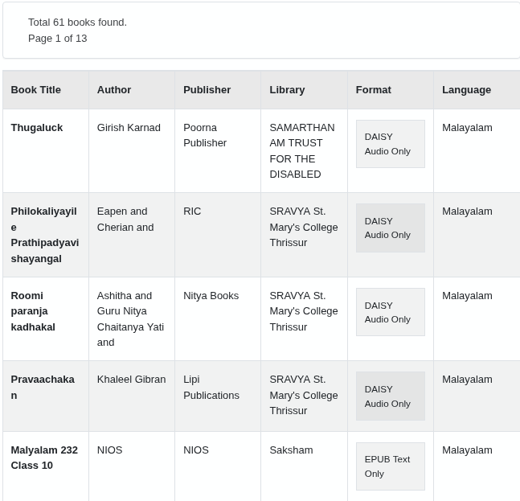

Sugamya Pustakalaya: find accessible Malayalam books for eligible readers
This is not a free-books library for everyone. Sugamya Pustakalaya serves people who cannot read standard print because of blindness, low vision or another disability. Its public catalogue can help an eligible reader, parent or teacher find possible books before asking about membership.
What is the library?
The Department of Empowerment of Persons with Disabilities lists Sugamya Pustakalaya as an accessible digital library. The library describes itself as a collaboration involving DAISY Forum of India, TCS and NIEPVD, with contributions from libraries serving readers with print disabilities. It also includes material through partners such as Bookshare.
The practical value is format and access: the FAQ lists options including DAISY audio, DAISY full text, EPUB, Word, HTML, Braille-ready files, plain text and RTF. That does not mean every book is available in every format. Check the format beside the title you need.
What we found in Malayalam
We browsed the public catalogue while signed out on 17 November. Following Languages → M → Malayalam returned 61 catalogue entries. The first page included DAISY Audio Only listings and a NIOS class-10 Malayalam title listed as EPUB Text Only.
That count is a dated catalogue result, not a guarantee of access, successful download, current syllabus coverage or audio quality. The site also says its Browse feature does not include Bookshare titles, so this Malayalam result should not be treated as the complete collection across every partner.

How to discover a possible book
- Open the library homepage and choose Languages under Browse.
- Choose M, then Malayalam. You can also use the checked Malayalam catalogue link below.
- Read the title, author, contributing library and format. Note these details for the eligible reader's membership enquiry.
- For a specific textbook, use Search or the Text Books browse option. Confirm the title and edition with the relevant library before relying on it for study.
Membership and reading are separate steps
Our check stopped at catalogue discovery. We did not register, submit a certificate, obtain membership, download a book or test a reader application. A family member helping with the search should not assume that they can use the books as their own unrestricted library.
The FAQ says a compatible application or device is needed to read the chosen file format. It also describes an offline-request route through the member's library for readers who cannot download large files. We did not test that route or establish a particular library's fee or delivery arrangement.
Do not forward downloaded books
The FAQ prohibits sharing or circulating downloaded files, even to another eligible reader. Each reader should use their own approved access arrangement. Do not upload books to a class group, WhatsApp channel or public drive. This guide shares catalogue links only, not book files.
Official links
- Sugamya Pustakalaya homepage.
- Malayalam catalogue checked in our test.
- Official FAQ: eligibility, fees, formats and no-sharing rules.
- Government department's library overview.
Independent AiCoN catalogue-discovery guide. Not a membership or download tutorial. Availability and library conditions can change.